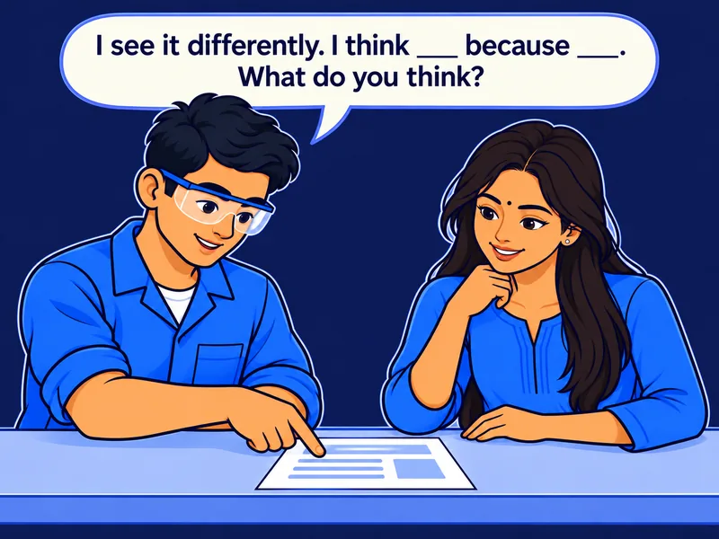

Community Activity · 0.25 hrs · Practical
AAI-E-MC1-S02-COMM01
Peer Exchange · Framing and Refining
You work with a partner. You review each other's work and give feedback.
This takes about 15 minutes for both of you.
How it works
This activity has four steps.
You and your partner do every step. Then you swap roles and do them again.
Your task. Put the four steps in the right order.
Before you start
Keep your example safe and made-up.
Use only made-up names, dates and numbers in your example. Never share real marks, phone numbers or ID numbers.
Your task. Type your partner's name in the box.
Round 1 · You review
Which parts are in your partner's request?
Ask your partner for the weak request, the improved request and both AI answers.
Your task. Type your partner's improved request. Then tap every part that you find in it.
Parts you find in it
Round 1 · You review
Which move did your partner use?
Your partner used one move to refine the request. Look at what changed between the two requests.
Your task. Tap the one move that your partner used.
Round 1 · You review
Now you give your partner feedback.
A strength says what worked and why. A risk says what could go wrong.
Your task. Type one strength, one risk and one suggested change.
Round 1 · You review
You can disagree and still be respectful.
Talk about the work, not the person. If you disagree, say: “I see it differently. I think ___ because ___. What do you think?”
Your task. Stamp each comment Helpful or Not helpful.

I see it differently. I think the format is missing because there is no word limit.
You are bad at this. You never get it right.
Your request says who it is for. That is a strength.
This is wrong. Change it.
Round 2 · You get reviewed
Now your partner reviews your work.
Share your weak request, your improved request and both AI answers.
Your task. Type the strength, risk and change that your partner gave you.
Round 2 · You get reviewed
Revise your request one time.
Make only one change. Base it on the feedback from your partner.
Your task. Type your revised request in the box.
Round 2 · You get reviewed
Did the feedback help your request?
There is no wrong answer here. You decide if the change made your request more usable.
Your task. Tap Yes or No.
Did your partner's feedback make your request more usable?
Close out
Your record needs four parts.
Check that you have every part. Then download your record.
Your task. Tap each card to see one part of your record.
Download your record before you close.
This page does not save your work. Download it, or show it to your facilitator, before you close this tab.
Your task. Tap Download my record to save your work.
Reminder
Feedback is about the work, not the person. Never share real personal details.